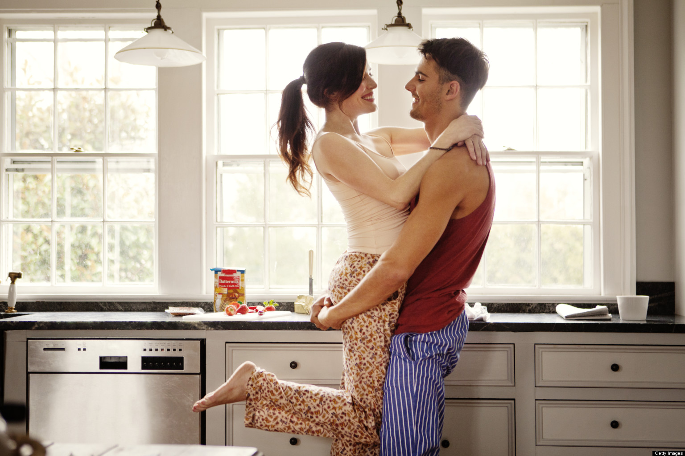

Courtship advocates claim that allows for the two people to truly get to know each other in a more platonic setting without the pressures of physical intimacy or emotions clouding their view.
It is a choice to avoid temptation and experience the blessings of purity. It is a choice to not emotionally give away your heart, piece by piece, to many others through casual dating relationships and instead to give your whole heart to your life partner.
Courting may be termed as “getting serious” or “going steady” in today’s times, but essentially, it means that both you and your woman (not just you) are choosing to commit to one another exclusively and are looking to a possible future together. Both of you sensed that this wasn’t just going to be about having casual sex or a bit of fun
In addition, courting couples state up front that their intentions are to see if the other person is a suitable potential marriage partner.
Even if you're not religious, courtship guidelines offer solid advice to the modern daters among us.
But Of course, this doesn't mean all courtships end in marriage, as reality dictates that some things simply aren't meant to be. It just means that people enter into courtships for the purpose of a serious, future-focused relationship. .
Each individual is unique, each courtship will be unique. While those who choose courtship will hold to general guidelines for the relationship, their specific choices about when, where, and how to court may differ according to their needs and circumstances.
Let's talk about "Hook Up Culture"
In todays society where technology made us easy to meet people all over the world and we feel that we don't need to look people in the eyes to communicate anymore. But at the end of the day, we're designed for human contact, not a computer screen. It can be hard to find the “real” person behind the screen. Unfortunately, people have been really confident behind the computer keyboard, but then you see them in person and things are very different. .
People getting into a relationship after just a few months of knowing each other through any online dating website without the process of courtship. Some have a happy ending, with wedding bells and doves but most just end in failure like how divorce been risen up in today's world.
How would you have a strong relationship if it’s built on a weak foundation from the start? Seeing people easily breaking up is a sign that just chatting the person you fancy isn’t enough to create a strong bond with them.
We now live in an era where we can say that men and women are equal in rights and duties (though sometimes women are still seen as the weaker sex). Hook up culture is fine but most of the time ends up to one night stand. The dark truth about hook-ups though is that they don’t solve this loneliness. And, behind all the flirting and ego stroking, this loneliness is what we’re really trying to counteract when we seek out hook-ups.
Of course, during the actual act of the hook-up we feel good. But when all is said and done. You’re still left feeling alone, and the woman who you should be with is either somewhere else or still yet to be found. Sadly, women might feel guilty about having casual sex or worry that the man will not respect her because she had the audacity to do the exact same thing he did. I wish women didn't feel that way, but it does happen.
Let's create a healthy relationship
In order to have a healthy, long-term relationship in the future, we need to become comfortable with ourself now. Crafting our identity around being able to pass through meaningless, transient encounters without much thought will start to shape who we are, what we look for, and where we derive both pleasure and happiness. No matter how much we think we can separate emotional and physical involvement, in the end, these things are inherently linked. Aimless hook-ups, will always be a losing game.